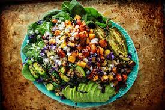

Quinoa Salad with Roasted Vegetables

Description
This Quinoa Salad with Roasted Vegetables is not only flavorful but also packed with nutrients. It's a great option for a light lunch, dinner, or even as a side dish for a barbecue or picnic. Enjoy!
Ingredients
- 1 cup quinoa, rinsed
- 2 cups water or vegetable broth
- 1 medium-sized zucchini, diced
- 1 red bell pepper, diced
- 1 yellow bell pepper, diced
- 1 cup cherry tomatoes, halved
- 1 red onion, thinly sliced
- 3 cloves garlic, minced
- 3 tablespoons olive oil
- Salt and pepper to taste
- 1 teaspoon dried oregano
- Juice of 1 lemon
- 1/4 cup fresh parsley, chopped
- Feta cheese, crumbled (optional)
Steps
- Preheat the oven to 400°F (200°C).
- In a saucepan, combine quinoa and water or vegetable broth. Bring to a boil, then reduce heat, cover, and simmer for about 15 minutes or until quinoa is cooked and water is absorbed. Fluff the quinoa with a fork and set aside to cool.
- In a large mixing bowl, combine the diced zucchini, red and yellow bell peppers, cherry tomatoes, and sliced red onion.
- In a small bowl, mix minced garlic with olive oil, salt, pepper, and dried oregano. Drizzle this mixture over the vegetables and toss until well coated.
- Spread the vegetables on a baking sheet in a single layer. Roast in the preheated oven for about 20-25 minutes or until the vegetables are tender and slightly browned.
- In a large serving bowl, combine the cooked quinoa with the roasted vegetables.
- Squeeze fresh lemon juice over the salad and toss gently to combine.
- Garnish with chopped fresh parsley and crumbled feta cheese (if using).
- Adjust salt and pepper to taste.
- Serve the quinoa salad warm or chilled.